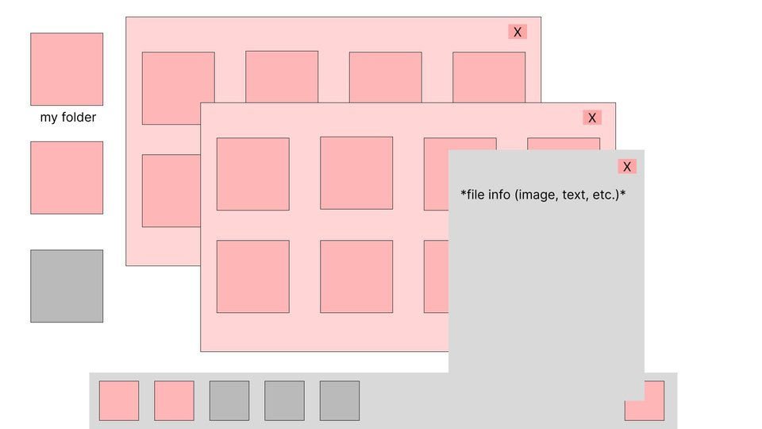
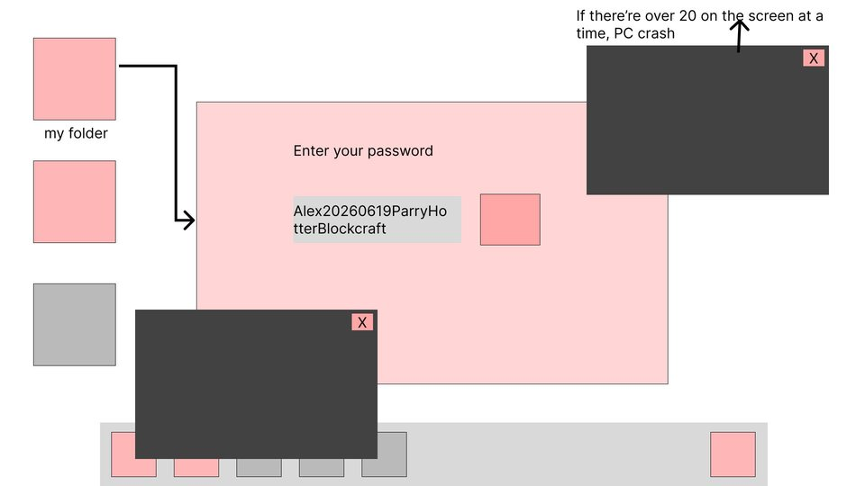
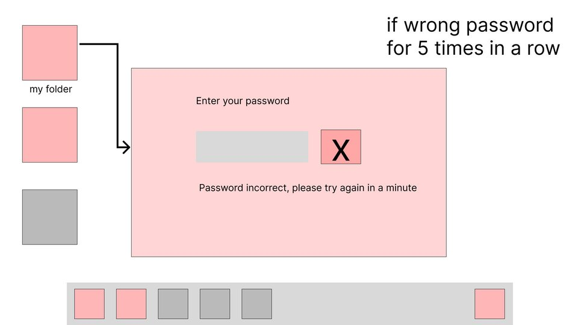
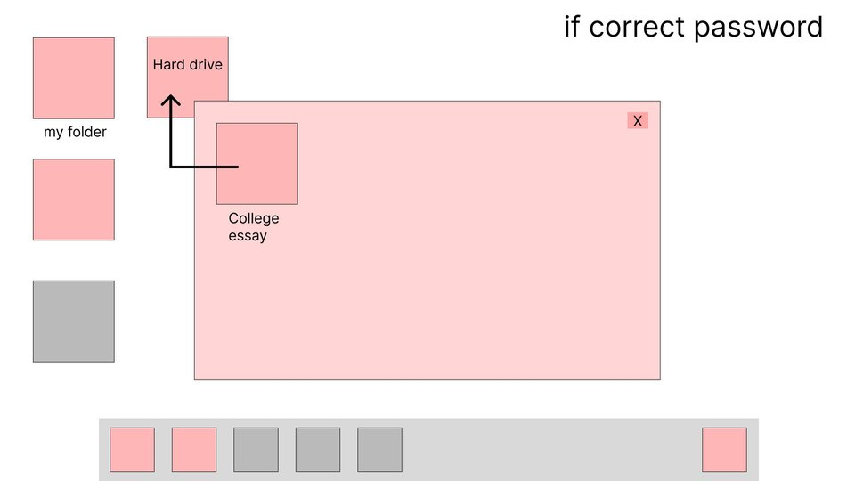
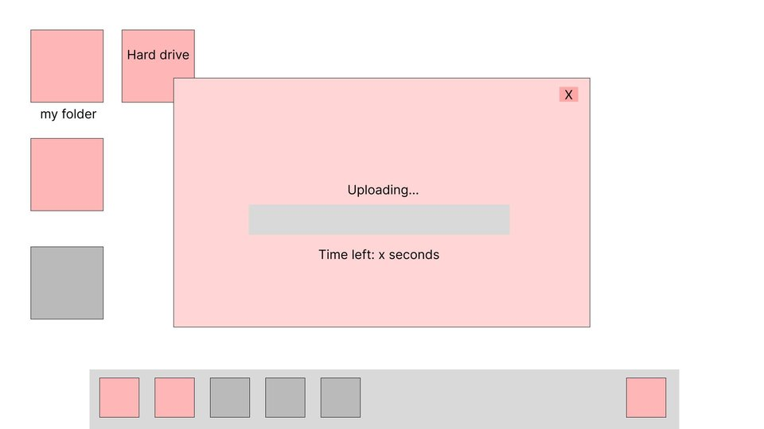
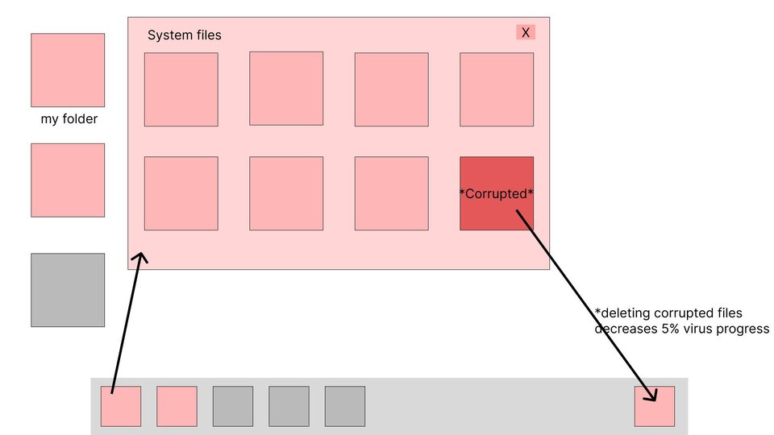
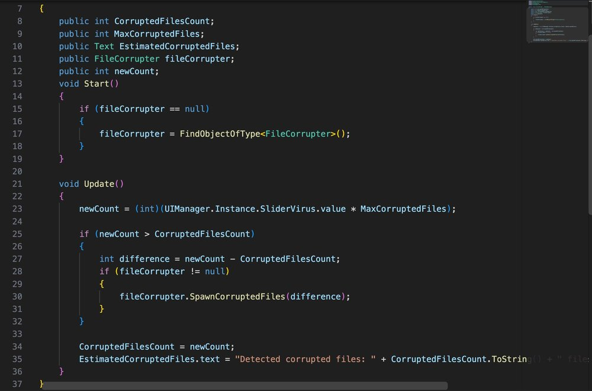
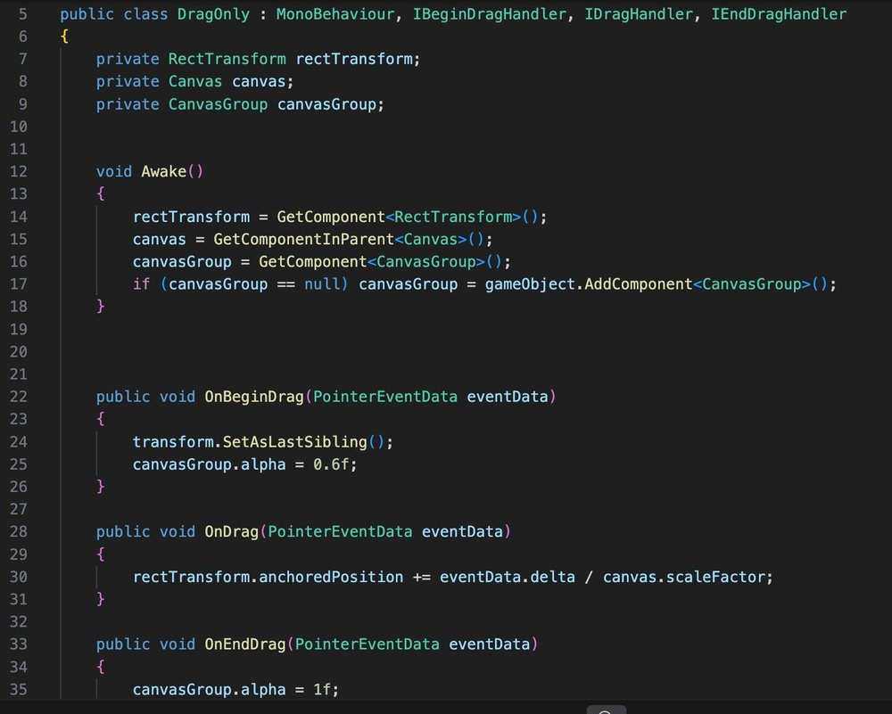
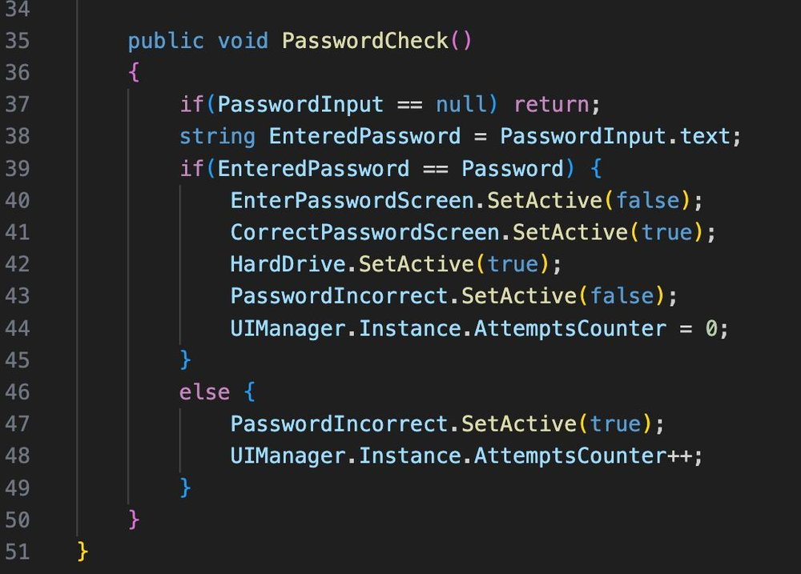
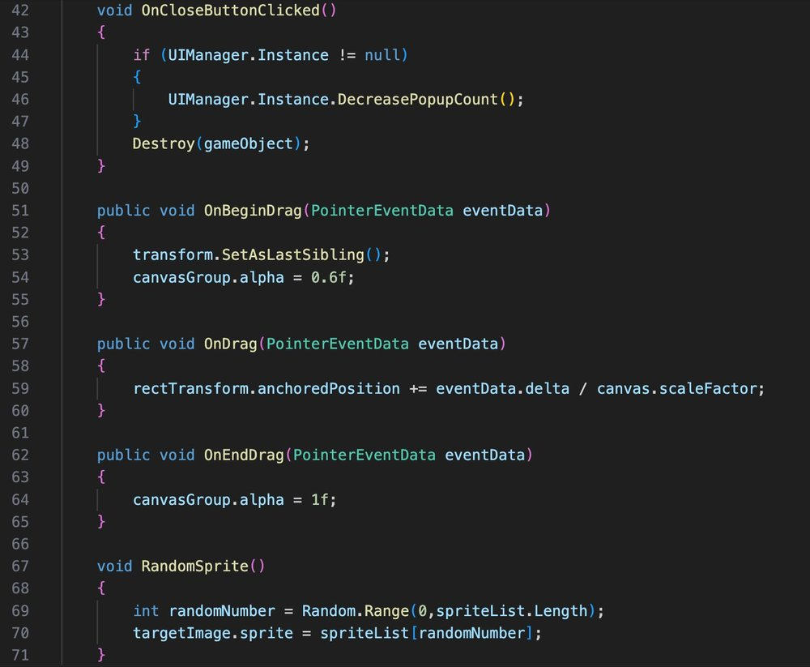

when
Oct 2026
Oct 2026
engine
Unity · C#
Unity · C#
team
solo
solo
my part
game design · art · programming
game design · art · programming
What it is
BandiA 2D point-and-click game about divided attention. Solve a password puzzle while deleting corrupted files and clearing disruptive pop-ups. The whole game is a desktop: folders, a dock, a trash can, and a timer counting down from 300 seconds until tech support arrives.
BandiTwo goals run in parallel: save the file, and slow down the virus. Both outcomes shape the ending. It's the videogame version of my board game of the same name, but this time you're alone and the virus doesn't take turns.

Recover the file
01 / search
Read old files for clues.
02 / unlock
Enter the folder password.
03 / back up
Drag the file to the hard drive.
04 / protect
Keep the virus down during upload.
player input
click
Open files and folders. Click X to close pop-ups.
drag & drop
Move windows; trash infected files; upload the key file.
type
Enter the password. Repeated errors cause a lockout.
check & survive
Call tech support. Monitor infection until help arrives.
Player journey






Screens


Core scripts




Problem → fix
scrolling
Reorganised UI objects under the correct scroll container to restore scrolling.
persistent infection
Moved the corrupted-file logic to an always-active parent so it works when Antivirus is closed.
ad variety
Stored pop-up textures in an array and picked a random entry for each ad for more variation.
What I learned
BandiThis was my first time using Unity. Before this I had only made things in Snap! and Ren'Py, where the engine does most of the work for you. Here I had to learn how the engine actually thinks: scenes and game objects, components and scripts in C#, how a timer or a pop-up is really just an object that someone has to tell when to appear.
BandiSo the thing I learned is less "how to make this game" and more "how to make Unity do what I want." That part carries over to whatever I build next.